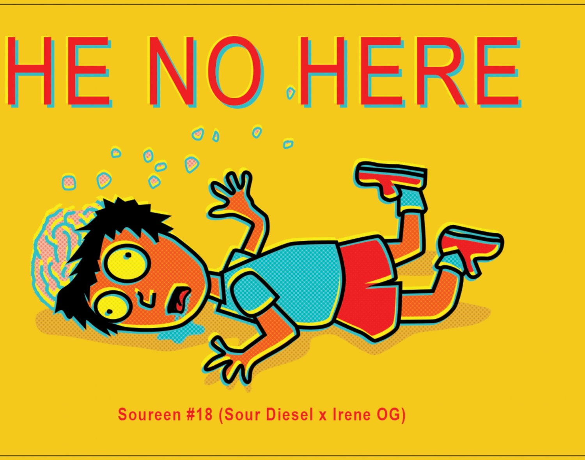

<!--
  UHH DIRT — Release 001 "He No Here" — ISSUE PAGE
  Per Paul's direction:
   - Hero: the label ARTWORK front & center, full screen (the riot). Art + strain only,
     no descriptor text. (Art region cropped from Sarah's flattened label for this proto;
     final should use a clean exported art file from Sarah.)
   - Scroll past the break into an elegant, still, "Japanese clean" reading space for the essay.
  Copy rule: Paul writes the essay. Below is a clearly-marked empty slot, not invented prose.
  Still/flat per doctrine — the explosive motion lives in the separate entry interaction, not here.
-->
<meta charset="utf-8">
<meta name="viewport" content="width=device-width, initial-scale=1">
<title>UHH DIRT 001 — He No Here</title>
<style>
  :root{
    --yellow:#F4C91B;
    --red:#E8332B;
    --paper:#F3F2ED;
    --ink:#1a1714;
    --hair:#dcd9cf;
    --faded:#9a9485;
    --mono:"DejaVu Sans Mono",ui-monospace,"Courier New",monospace;
    --serif:"Iowan Old Style","Palatino Linotype","Palatino",Georgia,"Times New Roman",serif;
    --cond:"Arial Narrow","Helvetica Neue Condensed",Impact,system-ui,sans-serif;
  }
  *{margin:0;padding:0;box-sizing:border-box}
  html{scroll-behavior:smooth}
  body{background:var(--paper);color:var(--ink);font-family:var(--serif)}

  /* persistent section nav — top-right, consistent across the site */
  .nav{position:fixed;top:3.4vh;right:3.4vw;z-index:60;display:flex;flex-direction:column;
    align-items:flex-end;gap:.55rem;text-align:right}
  .nav a{font-family:var(--mono);font-size:11px;letter-spacing:.24em;text-transform:uppercase;
    text-decoration:none;font-weight:600;color:#4a4636;transition:color .15s;white-space:nowrap}
  .nav a:hover{color:#1a1714}
  @media (max-width:560px){ .nav a{font-size:9.5px;letter-spacing:.14em} }
  /* —— HERO: the riot —— */
  .hero{
    min-height:100svh;background:var(--yellow);
    display:flex;flex-direction:column;align-items:center;justify-content:center;
    position:relative;padding:5vh 4vw;
  }
  .hero .mark{
    position:absolute;top:2.4vh;left:3.4vw;font-family:var(--mono);font-weight:700;
    font-size:12px;letter-spacing:.34em;color:#6b5708;writing-mode:vertical-rl;
  }
  .hero-art{
    max-height:82vh;max-width:94vw;width:auto;height:auto;display:block;
    image-rendering:auto;
  }
  .cue{
    position:absolute;bottom:3.2vh;left:50%;transform:translateX(-50%);
    text-align:center;font-family:var(--mono);font-size:10px;letter-spacing:.34em;
    color:#6b5708;text-transform:uppercase;
  }
  .cue .chev{display:block;width:0;height:0;margin:6px auto 0;
    border-left:5px solid transparent;border-right:5px solid transparent;border-top:6px solid #6b5708}

  /* —— THE BREAK —— */
  /* hard cut from yellow to paper = the break itself */

  /* —— READING SPACE: still, elegant, generous —— */
  .read{position:relative;padding:18vh 6vw 0}
  .read .spine{ /* vertical issue mark echoing the label */
    position:absolute;top:18vh;left:max(2.5vw,18px);font-family:var(--mono);
    font-size:11px;letter-spacing:.42em;color:var(--faded);font-weight:700;
    writing-mode:vertical-rl;text-orientation:mixed;
  }
  .article{max-width:34rem;margin:0 auto}
  .eyebrow{
    font-family:var(--mono);font-size:11px;letter-spacing:.28em;text-transform:uppercase;
    color:var(--red);margin-bottom:.5rem;
  }
  .deck{font-family:var(--cond);font-weight:700;text-transform:uppercase;letter-spacing:.01em;
    font-size:clamp(30px,6vw,52px);line-height:.96;color:var(--ink);margin-bottom:1.6rem}
  .rule{border:none;border-top:1px solid var(--hair);margin:0 0 3rem}

  .essay{font-size:1.15rem;line-height:1.95;color:#2a241e}
  .essay .slot{
    color:#6f6a60;font-style:italic;
    border-left:2px solid var(--red);padding-left:1.1rem;margin:0 0 2.2rem;
  }

  /* Main Source verdict — red bookmark tab on the right edge.
     Collapsed by default. Open via the tab; collapse via the tab again, the ×,
     a click anywhere outside the panel, or Escape. */
  #verdict{position:fixed;top:22vh;right:0;z-index:65;display:flex;align-items:stretch;
    transform:translateX(calc(100% - 44px));transition:transform .38s cubic-bezier(.4,0,.2,1)}
  #verdict.open{transform:translateX(0)}
  #verdict .tab{flex:0 0 44px;background:var(--red);color:#fff;cursor:pointer;border:none;
    writing-mode:vertical-rl;text-orientation:mixed;display:flex;align-items:center;justify-content:center;
    font-family:var(--mono);font-size:11px;letter-spacing:.22em;text-transform:uppercase;
    padding:1.1rem .2rem;box-shadow:-4px 5px 0 #00000022;
    clip-path:polygon(0 0,100% 0,100% 100%,50% 93%,0 100%)}
  #verdict .panel{position:relative;flex:0 0 min(82vw,320px);background:var(--red);color:#fff;
    padding:2.4rem 1.6rem 1.7rem;box-shadow:-6px 6px 0 #00000022;overflow:auto;max-height:64vh}
  #verdict .vclose{position:absolute;top:.5rem;right:.7rem;background:none;border:none;color:#fff;
    font-family:var(--mono);font-size:18px;line-height:1;cursor:pointer;padding:.2rem .35rem;opacity:.8}
  #verdict .vclose:hover{opacity:1}
  #verdict .ptitle{font-family:var(--mono);font-size:11px;line-height:1.7;letter-spacing:.03em;
    text-transform:uppercase;font-weight:700;margin-bottom:1rem}
  #verdict .pbody{font-family:var(--serif);font-style:italic;font-size:1.02rem;line-height:1.7;color:#fff}
  /* strain genetics: own line so any spillover sits under the first strain name */
  .strain{font-family:var(--mono);font-size:11px;letter-spacing:.26em;text-transform:uppercase;
    color:var(--red);margin:0 0 1.5rem;line-height:1.8}
  .credits{
    max-width:34rem;margin:14vh auto 0;padding:2.4rem 0 9vh;
    border-top:1px solid var(--hair);
    font-family:var(--mono);font-size:12px;line-height:2;letter-spacing:.02em;color:var(--faded);
  }
  .credits .lid{width:34px;height:34px;border-radius:50%;display:block;margin-bottom:1.4rem;opacity:.92}
  .credits b{color:#56514733;font-weight:400}
  .credits strong{color:#5b564c;font-weight:700}

  @media (max-width:1024px){ .read .spine{display:none} }
  @media (max-width:640px){
    .read{padding:12vh 7vw 0}
    .essay{font-size:1.08rem;line-height:1.85}
  }
</style>

<nav class="nav">
  <a href="../index.html#home">Home</a>
  <a href="#">About</a>
  <a href="#">Dig In The Dirt</a>
</nav>

<!-- HERO -->
<section class="hero">
  <span class="mark">ISSUE 001</span>
  
  <div class="cue">Read<span class="chev"></span></div>
</section>

<!-- READING SPACE -->
<main class="read">
  <span class="spine">UHH DIRT &nbsp;·&nbsp; <b>ISSUE 001</b> &nbsp;·&nbsp; HE NO HERE</span>
  <article class="article">
    <div class="eyebrow"><b>Issue 001</b> &nbsp;·&nbsp; Soureen #18</div>
    <div class="strain">Sour Diesel &times; Irene OG</div>
    <h1 class="deck">He No Here</h1>
    <hr class="rule">
    <div class="essay">
      <p class="slot">[ Your essay goes here. I don't write this part — it's set in this measure,
        size, and leading so you can feel exactly how the words will read once they're yours. ]</p>
    </div>
  </article>

  <footer class="credits">
    UHH DIRT is a remembrance by <strong>@paulwalkercares</strong>, grown in living soil in
    Los Angeles, California.<br>
    Artwork by <strong>@sarahleegrillo</strong>. Online essays by <strong>@paulwalkercares</strong>.<br>
    UHH DIRT was created by <strong>Dave Ellis (RIP)</strong>, Stephen Ellis and Matt Franklin,
    with help from Pete Wolff, in 1997 in suburban-as-fuck NJ.
  </footer>
</main>

<aside id="verdict">
  <button class="tab" id="verdictTab" aria-expanded="false" aria-controls="verdictPanel">Is it good?</button>
  <div class="panel" id="verdictPanel">
    <button class="vclose" id="verdictClose" aria-label="Collapse verdict" title="Collapse">&times;</button>
    <div class="ptitle">The sponsored-by-Main Source-"Fuck What You Think"-unbiased-critical-thoughts-on-this-issue blurb</div>
    <p class="pbody">[ Your transparent-as-hell verdict on this harvest goes here — is the weed any good? Your words, every issue. ]</p>
  </div>
</aside>

<script>
(()=>{
  const v=document.getElementById('verdict');
  const tab=document.getElementById('verdictTab');
  const close=document.getElementById('verdictClose');
  const set=(open)=>{ v.classList.toggle('open',open); tab.setAttribute('aria-expanded',open); };

  tab.addEventListener('click',e=>{ e.stopPropagation(); set(!v.classList.contains('open')); });
  close.addEventListener('click',e=>{ e.stopPropagation(); set(false); });
  document.addEventListener('click',e=>{ if(v.classList.contains('open') && !v.contains(e.target)) set(false); });
  document.addEventListener('keydown',e=>{ if(e.key==='Escape') set(false); });
})();
</script>
